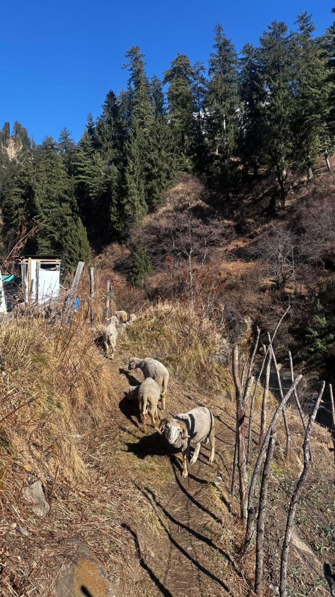
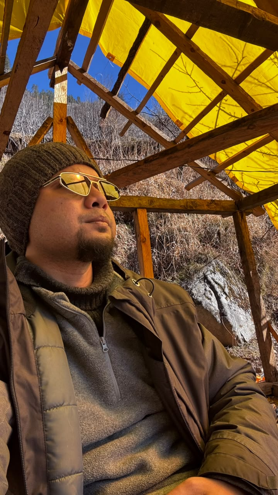
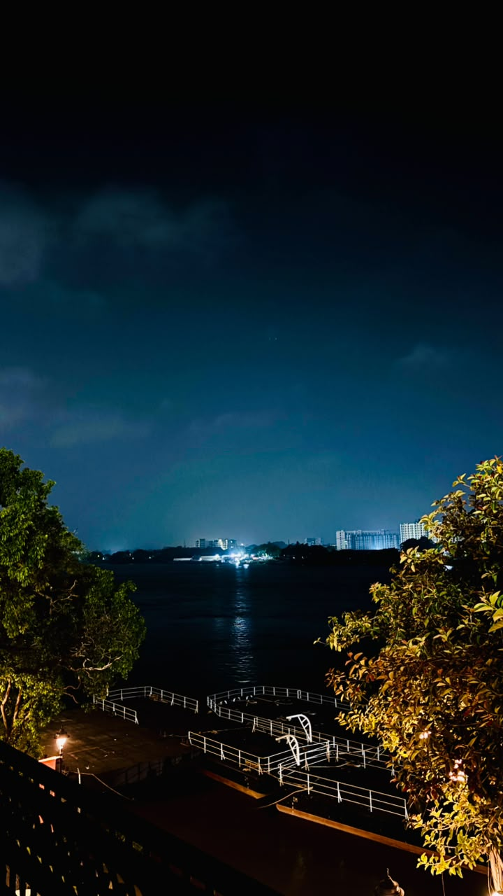

AI-informed practice
Integrating AI tools — Topaz Fabric, Cursor, Claude — into design workflows and teaching teams to use them effectively.
Design Manager · UX Strategy · AI-Led Practice
I'm Rathijit Adhikary — I build design teams, systems and cultures that ship enterprise products people trust. 10+ years turning ambiguous problems into measurable outcomes.
Currently Associate Manager of Experience Design at Infosys Wongdoody, where I run multiple concurrent engagements end-to-end, coach designers to grow in craft and ownership, and set accessibility and design-system standards adopted across global client organisations.
— A design leader first, people manager second.
When the laptop closes, I trade wireframes for real-world exploration. I believe being a great designer means being an active observer of the world. Here's how I refuel my creative tank:
In the Kitchen. I treat cooking a lot like UX — starting with raw ingredients, experimenting with flavors, and curating a final experience that brings people together.
Coffee Shops & People Watching. You'll often find me hopping between local cafes, not just for a great brew, but to quietly observe how people interact with their environments, their devices, and each other. It's hands-on user research in its most organic form.
Behind the Wheel. There is nothing quite like hitting the highway, finding a rhythm, and letting a long drive clear the mind.
On the Road. I am constantly chasing serene landscapes, fresh mountain air, and breathtaking views. Capturing the quiet beauty of nature through my camera lens is my ultimate reset button.





Integrating AI tools — Topaz Fabric, Cursor, Claude — into design workflows and teaching teams to use them effectively.
Mentored teams of 6+ designers across distributed environments — creating clarity, removing blockers and growing people.
Led engagements from discovery to handoff — research, journey mapping, prototyping, usability testing and dev support.
Architected Finacle's banking design system unifying multiple product tracks — with full documentation, accessibility and engineering integration.
Translate ambiguous problems into design direction with PMs, engineers and executives — and back decisions with data.
Production-ready HTML/CSS experience that bridges design intent and engineering reality.
A unified, insight-led Power BI analytics experience for Haleon that turned fragmented dashboards into clear, funnel-first decisions — Awareness → Consideration → Intent → Conversion → Retention — across Executive, Channel and an AI-driven Suggestion view.
A web platform where customers call, chat and video their support agents on policies and claims. We rebuilt the agent journey into a streamlined flow — then designed and shipped the clickable, production-ready HTML prototype for the client.
Multiple product tracks, each with its own design language. We unified them under one cohesive, technology-agnostic system — atoms to molecules — with documented components, WCAG-AA accessibility and production-ready code for the engineering teams.
A lengthy 16-question survey was killing participation. We broke it into playful sets, tied character animations to answer choices and added a badge system to celebrate progress — a mobile-first, gamified experience that lifted honest feedback.
Lead and mentor 6+ designers across concurrent enterprise engagements; drive AI adoption and align UX strategy to measurable business outcomes.
Improved design & execution speed by 10% through UX consultation; ran design audits that boosted project success rate by 15%.
Led the Finacle Design System (+70% consistency) and up-skilled designers in front-end for 20% faster, smoother deliverables.
Built a technology-agnostic design system enabling custom implementations and a 20% improvement in functional workflows.
Designed and built interactive websites, landing pages and emailers with clean, reusable code and smooth project handoffs.
Rathi has been very committed toward delivering quality output on time — even on very short notice he delivered and helped us with our demos. His determination to finish the task shows he's ready to take on new challenges and grow.
Delivered prompt support for BOFA's Enterprise Payment solution, mentoring junior designers on UI & accessibility while ensuring on-time releases. He understands the problem statement and provides the right solution.
Rathijit and his team have consistently demonstrated exceptional reliability and dedication — highly regarded for professionalism, a positive attitude and a collaborative approach, always willing to support and share expertise.
A design unicorn — available for design leadership roles